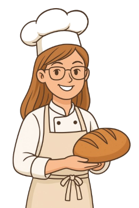

Jag heter Lisa och arbetar som bagare på Konditori Mill, där jag framför allt ägnar mig åt brödbakning, något som är både min största passion och specialitet. För mig handlar bröd inte bara om att mätta magen, utan om att skapa en smakupplevelse som gör skillnad i vardagen. Jag strävar alltid efter att utveckla recept och tekniker för att uppnå den perfekta balansen mellan smak, textur och doft. Mina kollegor brukar säga att jag har en särskild känsla för degar, och jag lägger stor stolthet i att varje limpa, baguette eller fralla som lämnar ugnen ska hålla högsta kvalitet. Även om brödbakning är mitt hjärta, har jag också erfarenhet av att göra bakelser och dekorera tårtor och andra sötsaker. Jag tycker om att varva det rustika och enkla i brödet med det mer kreativa och lekfulla som bakelserna erbjuder. Det ger mig möjlighet att vara både precis och fantasifull i mitt arbete.
På Konditori Mill vill jag bidra till att våra gäster inte bara får något gott att äta, utan även känner sig välkomna och inspirerade. Mitt mål är att varje bröd och bakelse ska sprida samma värme som jag själv känner när jag står vid bakbordet. Jag hämtar gärna inspiration från resor, möten med människor och olika matkulturer, och jag tycker om att tolka klassiska recept på nya sätt. På så vis kan jag förena tradition och innovation och skapa produkter som överraskar samtidigt som de känns välbekanta. För mig är bakning en livslång resa, där varje dag ger chansen att lära, växa och dela glädjen i hantverket med andra.
20/11 kl 12:00 anordnar Lisa en brödbakningskurs på Konditori Mill. Besök henne och resten av gänget och lär dig baka riktigt goda frallor!